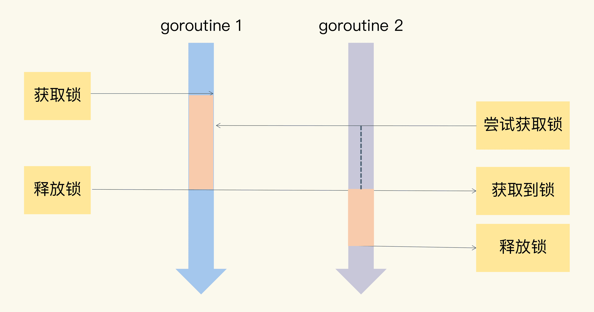
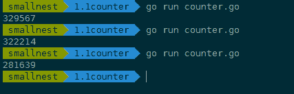

01 | Mutex：如何解決資源併發訪問問題？
你好，我是鳥窩。
今天是我們 Go 併發編程實戰課的第一講，我們就直接從解決併發訪問這個棘手問題入手。
說起併發訪問問題，真是太常見了，比如多個 goroutine 併發更新同一個資源，像計數器；同時更新用戶的賬戶信息；秒殺系統；往同一個 buffer 中併發寫入數據等等。如果沒有互斥控制，就會出現一些異常情況，比如計數器的計數不準確、用戶的賬戶可能出現透支、秒殺系統出現超賣、buffer 中的數據混亂，等等，後果都很嚴重。
這些問題怎麼解決呢？對，用互斥鎖，那在 Go 語言裡，就是 Mutex。
這節課，我會帶你詳細瞭解互斥鎖的實現機制，以及 Go 標準庫的互斥鎖 Mutex 的基本使用方法。在後面的 3 節課裡，我還會講解 Mutex 的具體實現原理、易錯場景和一些拓展用法。
好了，我們先來看看互斥鎖的實現機制。
互斥鎖的實現機制
互斥鎖是併發控制的一個基本手段，是為了避免競爭而建立的一種併發控制機制。在學習它的具體實現原理前，我們要先搞懂一個概念，就是臨界區。
在併發編程中，如果程序中的一部分會被併發訪問或修改，那麼，為了避免併發訪問導致的意想不到的結果，這部分程序需要被保護起來，這部分被保護起來的程序，就叫做臨界區。
可以說，臨界區就是一個被共享的資源，或者說是一個整體的一組共享資源，比如對數據庫的訪問、對某一個共享數據結構的操作、對一個 I/O 設備的使用、對一個連接池中的連接的調用，等等。
如果很多線程同步訪問臨界區，就會造成訪問或操作錯誤，這當然不是我們希望看到的結果。所以，我們可以使用互斥鎖，限定臨界區只能同時由一個線程持有。
當臨界區由一個線程持有的時候，其它線程如果想進入這個臨界區，就會返回失敗，或者是等待。直到持有的線程退出臨界區，這些等待線程中的某一個才有機會接著持有這個臨界區。

你看，互斥鎖就很好地解決了資源競爭問題，有人也把互斥鎖叫做排它鎖。那在 Go 標準庫中，它提供了 Mutex 來實現互斥鎖這個功能。
根據 2019 年第一篇全面分析 Go 併發 Bug 的論文Understanding Real-World Concurrency Bugs in Go，Mutex 是使用最廣泛的同步原語（Synchronization primitives，有人也叫做併發原語。我們在這個課程中根據英文直譯優先用同步原語，但是併發原語的指代範圍更大，還可以包括任務編排的類型，所以後面我們講 Channel 或者擴展類型時也會用併發原語）。關於同步原語，並沒有一個嚴格的定義，你可以把它看作解決併發問題的一個基礎的數據結構。
在這門課的前兩個模塊，我會和你講互斥鎖 Mutex、讀寫鎖 RWMutex、併發編排 WaitGroup、條件變量 Cond、Channel 等同步原語。所以，在這裡，我先和你說一下同步原語的適用場景。
- 共享資源。併發地讀寫共享資源，會出現數據競爭（data race）的問題，所以需要 Mutex、RWMutex 這樣的併發原語來保護。
- 任務編排。需要 goroutine 按照一定的規律執行，而 goroutine 之間有相互等待或者依賴的順序關係，我們常常使用 WaitGroup 或者 Channel 來實現。
- 消息傳遞。信息交流以及不同的 goroutine 之間的線程安全的數據交流，常常使用 Channel 來實現。
今天這一講，咱們就從公認的使用最廣泛的 Mutex 開始學習吧。是騾子是馬咱得拉出來遛遛，看看我們到底可以怎麼使用 Mutex。
Mutex 的基本使用方法
在正式看 Mutex 用法之前呢，我想先給你交代一件事：Locker 接口。
在 Go 的標準庫中，package sync 提供了鎖相關的一系列同步原語，這個 package 還定義了一個 Locker 的接口，Mutex 就實現了這個接口。
Locker 的接口定義了鎖同步原語的方法集：
type Locker interface {
Lock()
Unlock()
}
可以看到，Go 定義的鎖接口的方法集很簡單，就是請求鎖（Lock）和釋放鎖（Unlock）這兩個方法，秉承了 Go 語言一貫的簡潔風格。
但是，這個接口在實際項目應用得不多，因為我們一般會直接使用具體的同步原語，而不是通過接口。
我們這一講介紹的 Mutex 以及後面會介紹的讀寫鎖 RWMutex 都實現了 Locker 接口，所以首先我把這個接口介紹了，讓你做到心中有數。
下面我們直接看 Mutex。
簡單來說，互斥鎖 Mutex 就提供兩個方法 Lock 和 Unlock：進入臨界區之前調用 Lock 方法，退出臨界區的時候調用 Unlock 方法：
func(m *Mutex)Lock()
func(m *Mutex)Unlock()
當一個 goroutine 通過調用 Lock 方法獲得了這個鎖的擁有權後， 其它請求鎖的 goroutine 就會阻塞在 Lock 方法的調用上，直到鎖被釋放並且自己獲取到了這個鎖的擁有權。
看到這兒，你可能會問，為啥一定要加鎖呢？別急，我帶你來看一個併發訪問場景中不使用鎖的例子，看看實現起來會出現什麼狀況。
在這個例子中，我們創建了 10 個 goroutine，同時不斷地對一個變量（count）進行加 1 操作，每個 goroutine 負責執行 10 萬次的加 1 操作，我們期望的最後計數的結果是 10 * 100000 = 1000000 (一百萬)。
import (
"fmt"
"sync"
)
func main() {
var count = 0
// 使用WaitGroup等待10個goroutine完成
var wg sync.WaitGroup
wg.Add(10)
for i := 0; i < 10; i++ {
go func() {
defer wg.Done()
// 對變量count執行10次加1
for j := 0; j < 100000; j++ {
count++
}
}()
}
// 等待10個goroutine完成
wg.Wait()
fmt.Println(count)
}
在這段代碼中，我們使用 sync.WaitGroup 來等待所有的 goroutine 執行完畢後，再輸出最終的結果。sync.WaitGroup 這個同步原語我會在後面的課程中具體介紹，現在你只需要知道，我們使用它來控制等待一組 goroutine 全部做完任務。
但是，每次運行，你都可能得到不同的結果，基本上不會得到理想中的一百萬的結果。

這是為什麼呢？
其實，這是因為，count++ 不是一個原子操作，它至少包含幾個步驟，比如讀取變量 count 的當前值，對這個值加 1，把結果再保存到 count 中。因為不是原子操作，就可能有併發的問題。
比如，10 個 goroutine 同時讀取到 count 的值為 9527，接著各自按照自己的邏輯加 1，值變成了 9528，然後把這個結果再寫回到 count 變量。但是，實際上，此時我們增加的總數應該是 10 才對，這裡卻只增加了 1，好多計數都被“吞”掉了。這是併發訪問共享數據的常見錯誤。
// count++操作的彙編代碼
MOVQ "".count(SB), AX
LEAQ 1(AX), CX
MOVQ CX, "".count(SB)
這個問題，有經驗的開發人員還是比較容易發現的，但是，很多時候，併發問題隱藏得非常深，即使是有經驗的人，也不太容易發現或者 Debug 出來。
針對這個問題，Go 提供了一個檢測併發訪問共享資源是否有問題的工具： race detector，它可以幫助我們自動發現程序有沒有 data race 的問題。
Go race detector 是基於 Google 的 C/C++ sanitizers 技術實現的，編譯器通過探測所有的內存訪問，加入代碼能監視對這些內存地址的訪問（讀還是寫）。在代碼運行的時候，race detector 就能監控到對共享變量的非同步訪問，出現 race 的時候，就會打印出警告信息。
這個技術在 Google 內部幫了大忙，探測出了 Chromium 等代碼的大量併發問題。Go 1.1 中就引入了這種技術，並且一下子就發現了標準庫中的 42 個併發問題。現在，race detector 已經成了 Go 持續集成過程中的一部分。
我們來看看這個工具怎麼用。
在編譯（compile）、測試（test）或者運行（run）Go 代碼的時候，加上 race 參數，就有可能發現併發問題。比如在上面的例子中，我們可以加上 race 參數運行，檢測一下是不是有併發問題。如果你 go run -race counter.go，就會輸出警告信息。

這個警告不但會告訴你有併發問題，而且還會告訴你哪個 goroutine 在哪一行對哪個變量有寫操作，同時，哪個 goroutine 在哪一行對哪個變量有讀操作，就是這些併發的讀寫訪問，引起了 data race。
例子中的 goroutine 10 對內存地址 0x00c000126010 有讀的操作（counter.go 文件第 16 行），同時，goroutine 7 對內存地址 0x00c000126010 有寫的操作（counter.go 文件第 16 行）。而且還可能有多個 goroutine 在同時進行讀寫，所以，警告信息可能會很長。
雖然這個工具使用起來很方便，但是，因為它的實現方式，只能通過真正對實際地址進行讀寫訪問的時候才能探測，所以它並不能在編譯的時候發現 data race 的問題。而且，在運行的時候，只有在觸發了 data race 之後，才能檢測到，如果碰巧沒有觸發（比如一個 data race 問題只能在 2 月 14 號零點或者 11 月 11 號零點才出現），是檢測不出來的。
而且，把開啟了 race 的程序部署在線上，還是比較影響性能的。運行 go tool compile -race -S counter.go，可以查看計數器例子的代碼，重點關注一下 count++ 前後的編譯後的代碼：
0x002a 00042 (counter.go:13) CALL runtime.racefuncenter(SB)
......
0x0061 00097 (counter.go:14) JMP 173
0x0063 00099 (counter.go:15) MOVQ AX, "".j+8(SP)
0x0068 00104 (counter.go:16) PCDATA $0, $1
0x0068 00104 (counter.go:16) MOVQ "".&count+128(SP), AX
0x0070 00112 (counter.go:16) PCDATA $0, $0
0x0070 00112 (counter.go:16) MOVQ AX, (SP)
0x0074 00116 (counter.go:16) CALL runtime.raceread(SB)
0x0079 00121 (counter.go:16) PCDATA $0, $1
0x0079 00121 (counter.go:16) MOVQ "".&count+128(SP), AX
0x0081 00129 (counter.go:16) MOVQ (AX), CX
0x0084 00132 (counter.go:16) MOVQ CX, ""..autotmp_8+16(SP)
0x0089 00137 (counter.go:16) PCDATA $0, $0
0x0089 00137 (counter.go:16) MOVQ AX, (SP)
0x008d 00141 (counter.go:16) CALL runtime.racewrite(SB)
0x0092 00146 (counter.go:16) MOVQ ""..autotmp_8+16(SP), AX
......
0x00b6 00182 (counter.go:18) CALL runtime.deferreturn(SB)
0x00bb 00187 (counter.go:18) CALL runtime.racefuncexit(SB)
0x00c0 00192 (counter.go:18) MOVQ 104(SP), BP
0x00c5 00197 (counter.go:18) ADDQ $112, SP
在編譯的代碼中，增加了 runtime.racefuncenter、runtime.raceread、runtime.racewrite、runtime.racefuncexit 等檢測 data race 的方法。通過這些插入的指令，Go race detector 工具就能夠成功地檢測出 data race 問題了。
總結一下，通過在編譯的時候插入一些指令，在運行時通過這些插入的指令檢測併發讀寫從而發現 data race 問題，就是這個工具的實現機制。
既然這個例子存在 data race 問題，我們就要想辦法來解決它。這個時候，我們這節課的主角 Mutex 就要登場了，它可以輕鬆地消除掉 data race。
具體怎麼做呢？下面，我就結合這個例子，來具體給你講一講 Mutex 的基本用法。
我們知道，這裡的共享資源是 count 變量，臨界區是 count++，只要在臨界區前面獲取鎖，在離開臨界區的時候釋放鎖，就能完美地解決 data race 的問題了。
package main
import (
"fmt"
"sync"
)
func main() {
// 互斥鎖保護計數器
var mu sync.Mutex
// 計數器的值
var count = 0
// 輔助變量，用來確認所有的goroutine都完成
var wg sync.WaitGroup
wg.Add(10)
// 啟動10個gourontine
for i := 0; i < 10; i++ {
go func() {
defer wg.Done()
// 累加10萬次
for j := 0; j < 100000; j++ {
mu.Lock()
count++
mu.Unlock()
}
}()
}
wg.Wait()
fmt.Println(count)
}
如果你再運行一下程序，就會發現，data race 警告沒有了，系統乾脆地輸出了 1000000：

怎麼樣，使用 Mutex 是不是非常高效？效果很驚喜。
這裡有一點需要注意：Mutex 的零值是還沒有 goroutine 等待的未加鎖的狀態，所以你不需要額外的初始化，直接聲明變量（如 var mu sync.Mutex）即可。
那 Mutex 還有哪些用法呢？
很多情況下，Mutex 會嵌入到其它 struct 中使用，比如下面的方式：
type Counter struct {
mu sync.Mutex
Count uint64
}
在初始化嵌入的 struct 時，也不必初始化這個 Mutex 字段，不會因為沒有初始化出現空指針或者是無法獲取到鎖的情況。
有時候，我們還可以採用嵌入字段的方式。通過嵌入字段，你可以在這個 struct 上直接調用 Lock/Unlock 方法。
func main() {
var counter Counter
var wg sync.WaitGroup
wg.Add(10)
for i := 0; i < 10; i++ {
go func() {
defer wg.Done()
for j := 0; j < 100000; j++ {
counter.Lock()
counter.Count++
counter.Unlock()
}
}()
}
wg.Wait()
fmt.Println(counter.Count)
}
type Counter struct {
sync.Mutex
Count uint64
}
**如果嵌入的 struct 有多個字段，我們一般會把 Mutex 放在要控制的字段上面，然後使用空格把字段分隔開來。**即使你不這樣做，代碼也可以正常編譯，只不過，用這種風格去寫的話，邏輯會更清晰，也更易於維護。
甚至，你還可以把獲取鎖、釋放鎖、計數加一的邏輯封裝成一個方法，對外不需要暴露鎖等邏輯：
func main() {
// 封裝好的計數器
var counter Counter
var wg sync.WaitGroup
wg.Add(10)
// 啟動10個goroutine
for i := 0; i < 10; i++ {
go func() {
defer wg.Done()
// 執行10萬次累加
for j := 0; j < 100000; j++ {
counter.Incr() // 受到鎖保護的方法
}
}()
}
wg.Wait()
fmt.Println(counter.Count())
}
// 線程安全的計數器類型
type Counter struct {
CounterType int
Name string
mu sync.Mutex
count uint64
}
// 加1的方法，內部使用互斥鎖保護
func (c *Counter) Incr() {
c.mu.Lock()
c.count++
c.mu.Unlock()
}
// 得到計數器的值，也需要鎖保護
func (c *Counter) Count() uint64 {
c.mu.Lock()
defer c.mu.Unlock()
return c.count
}總結這節課，我介紹了併發問題的背景知識、標準庫中 Mutex 的使用和最佳實踐、通過 race detector 工具發現計數器程序的問題以及修復方法。相信你已經大致瞭解了 Mutex 這個同步原語。
在項目開發的初始階段，我們可能並沒有仔細地考慮資源的併發問題，因為在初始階段，我們還不確定這個資源是否被共享。經過更加深入的設計，或者新功能的增加、代碼的完善，這個時候，我們就需要考慮共享資源的併發問題了。當然，如果你能在初始階段預見到資源會被共享併發訪問就更好了。
意識到共享資源的併發訪問的早晚不重要，重要的是，一旦你意識到這個問題，你就要及時通過互斥鎖等手段去解決。
比如 Docker issue 37583、35517、32826、30696等、kubernetes issue 72361、71617等，都是後來發現的 data race 而採用互斥鎖 Mutex 進行修復的。
思考題
你已經知道，如果 Mutex 已經被一個 goroutine 獲取了鎖，其它等待中的 goroutine 們只能一直等待。那麼，等這個鎖釋放後，等待中的 goroutine 中哪一個會優先獲取 Mutex 呢？
歡迎在留言區寫下你的思考和答案，我們一起交流討論。如果你覺得有所收穫，也歡迎你把今天的內容分享給你的朋友或同事。